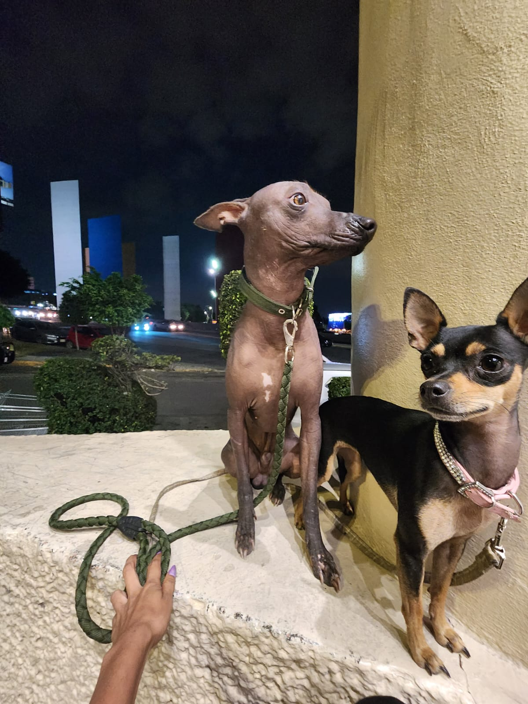
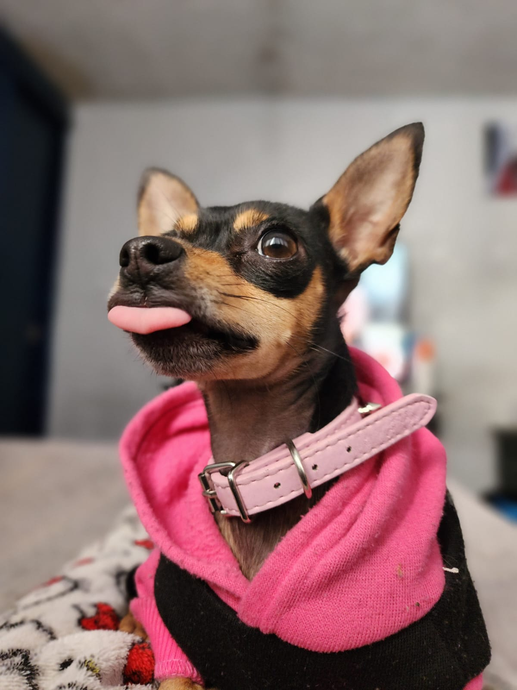
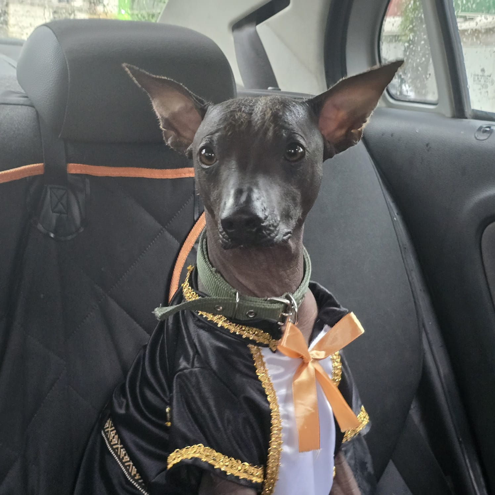

Mis mascotas.
Conoce sus leyendas
Adopta un perro

Tengo dos perros, un Xoloitzcuintle y una Chihuahua.
RiRi

La Chihuahua se llama RiRi, tiene 2 años y simplemente es la mejor. La tengo desde que tenía un mes de nacida y realmente compartimos las mismas 5 neuronas. Es la más lista y obediente pero también es muy enojona, de ahí su nombre (Bad Girl RiRi).
Fun facts:
Le gusta el queso
Se sabe varios trucos y entiende a la perfección
Ella misma tiene una mascota tortuga llamada "Rafael"
Cholo

El Xoloitzcuintle se llama Cholo, tiene 1 año, y tiene bastante energía. Es un tamaño intermedio pero cuando lo obtuve me dijeron que sería mini. Igual él se creé miniatura
Fun facts:
Come todo aunque no sepa si sea comestible
Es el más veloz, ningún perro ha podido alcanzarlo
Él piensa que es un chihuahua también
PrivacyPolicies.com © 2002 - 2024 Reservados todos los derechos